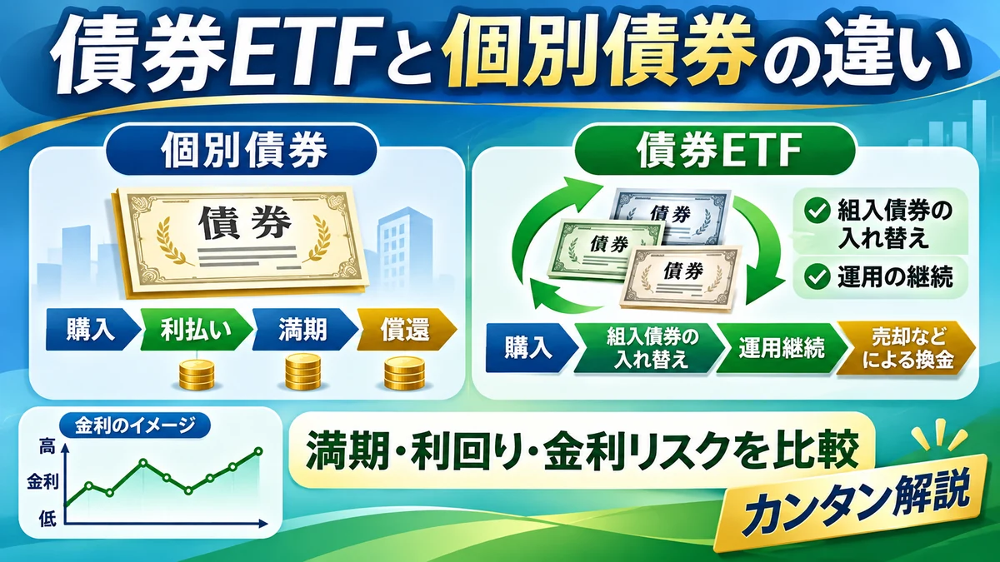

債券ETFと個別債券の違いとは？満期・利回り・金利リスクを初心者向けに比較解説
債券ETFと個別債券は、どちらも債券市場に投資する方法ですが、満期の扱いや価格変動、受け取るお金の仕組みが異なります。まずは基本的な違いを確認しましょう。

この記事の内容
- 債券ETFと個別債券の違いとは？
- 債券ETFと個別債券の比較一覧
- 個別債券の仕組み
- 債券ETFの仕組み
- 満期・償還の違い
- 個別債券は満期まで持てば元本保証？
- 金利が上昇すると債券価格はなぜ下がる？
- 金利上昇時の個別債券と債券ETFの違い
- デュレーションとは？
- 債券ETFを長期間持てば損失は回復する？
- 利回りの違い
- 債券ETFの分配金と個別債券の利息
- 分散投資と信用リスク
- 国債ETFと社債ETFの違い
- 為替ヘッジあり・なしの違い
- 債券ETFと債券投資信託の違い
- NISAで債券ETFを購入できる？
- 費用・税金・売買時の注意点
- どちらを比較するときに何を確認すべき？
- 初心者向けチェックリスト
- よくある質問（FAQ）
- まとめ
債券ETFと個別債券の違いとは？
個別債券 は国や企業などが発行した特定の債券を直接保有し、 債券ETF は複数の債券などを組み入れる上場投資信託を保有する仕組みです。
一般的な個別債券には満期があり、発行体が契約どおり履行すれば定められた償還金を受け取ります。一方、一般的な債券ETF自体には満期がなく、債券を入れ替えながら運用を続けます。
満期のある債券ETFや、特殊な償還条件を持つ個別債券もあります。 どちらも元本保証の商品とは限りません。
債券ETFと個別債券の比較一覧
| 比較項目 | 個別債券 | 一般的な債券ETF |
|---|---|---|
| 投資対象 | 特定の債券 | 複数の債券など |
| 満期 | 通常あり | ETF自体には通常なし |
| 償還 | 契約条件に従う | 個別債券のような額面償還は通常なし |
| 利息・分配金 | 債券の利払い条件による | ETFの分配方針による |
| 金利リスク | あり | あり |
| 信用リスク | 発行体に依存 | 組入債券に依存 |
| 分散投資 | 保有銘柄数による | 複数債券に分散する商品が多い |
| 売買価格 | 債券市場の価格による | 取引所の市場価格による |
| 費用 | 売買価格や取引条件等に反映される場合がある | 信託報酬・売買コスト等 |
| 為替リスク | 外貨建ての場合など | 投資対象やヘッジ方針による |
※一般的な仕組みの比較です。商品ごとに例外があります。スマートフォンでは表を左右にスクロールできます。
個別債券の仕組み
債券は発行体（国・企業など）が資金を調達するために発行します。以下は架空の固定利付債券の例です。
| 用語 | 意味・架空例 |
|---|---|
| 発行体 | 国や企業など、利息・償還金を支払う主体 |
| 額面金額 | 100万円（償還額の基準） |
| 発行価格 | 発行時の販売価格。額面と異なる場合がある |
| 表面利率 | 年2％。額面100万円なら年2万円の利息（税引前） |
| 利払い日 | 利息を支払う日。年1回・年2回など条件による |
| 満期日 | 発行から5年後と仮定 |
| 償還金額 | 額面100万円と仮定。ただし契約・信用状況による |
| 市場価格 | 途中売却する際に市場環境で変動する価格 |
※一般的な仕組みの比較です。商品ごとに例外があります。スマートフォンでは表を左右にスクロールできます。
年1回の利払いと仮定すれば、各年2万円を受け取り、満期には発行体が契約どおり履行すれば100万円が償還されます。購入価格・税金・経過利子等によって実際の損益は変わります。 表面利率と実際の投資利回りは同じとは限りません。
債券ETFの仕組み
- 組入債券： 国債・社債など複数の債券を保有。
- 基準価額（NAV）： 組入資産などから負債を差し引いた1口当たりの純資産価値。
- 市場価格： 取引所の売買需給で決まる価格。NAVと乖離する場合がある。
- 分配金： 運用収益や商品ごとの分配方針に従う。
- 指数連動： 債券指数を追うETFがある一方、アクティブ運用型もある。
- 信託報酬： 運用・管理のため継続的に負担する費用。
- 組入れの入れ替え： 満期・指数構成・残存年限・運用方針に応じて売買する。
ETFの市場価格はNAVと必ずしも一致しません。需給、海外市場の休場、流動性低下などにより乖離することがあります。基本は ETFとは も参照してください。
満期・償還の違い
個別債券
契約上の満期・償還条件を確認
一般的な債券ETF
ETF自体の満期は通常ない
個別債券は満期時に契約上の償還金を受け取るのが一般的です。債券ETFは組入債券が満期になっても、ETF全体は通常継続し、償還金を新たな債券に再投資する場合があります。
例外として、特定年に終了する満期設定型の債券ETFもあります。ETFの終了時に投資額が保証されるとは限りません。
個別債券は満期まで持てば元本保証？
満期まで保有しても購入金額の無条件の保証はありません。
- 発行体の債務不履行（デフォルト）で利息・償還金が支払われない場合がある。
- 信用力が悪化すると市場価格が下がり、途中売却が難しくなる場合がある。
- 劣後債・永久債・仕組債などは特殊な損失負担・償還条件を持つ。
- 期限前償還により予定していた利息収入や再投資条件が変わることがある。
- 外貨建て債券は円高で円換算の受取額が減少し得る。
- インフレにより償還金の実質的な購買力が下がり得る。
例えば額面100万円の債券を105万円で購入し、満期に100万円で償還された場合、償還額は購入額より5万円少なくなります。利息や税金を含めた総損益は別途計算が必要です。
金利が上昇すると債券価格はなぜ下がる？
固定利付債券の利息が変わらない一方、市場で新たに発行される債券の利回りが高くなると、既発債券は価格を下げて利回りを調整する傾向があります。反対に金利低下では価格が上がりやすくなります。
ただし信用力、流動性、償還条件なども価格に影響するため、必ず逆方向に動くとは限りません。 金利の種類と関係 や 債券市場 も参考になります。
金利上昇時の個別債券と債券ETFの違い
| 架空のケース | 個別債券 | 債券ETF |
|---|---|---|
| 当初 | 額面100万円の固定利付債券を額面で購入 | 基準価額10,000円で購入と仮定 |
| 金利上昇後 | 市場価格が95万円に下落 | NAVが9,500円に下落 |
| 途中売却 | 95万円で売れば価格差5万円の損失（利息・費用等除く） | 市場価格で売却。NAVと約定価格は異なる場合がある |
| 保有継続 | 契約履行なら満期に定められた償還金を受け取る | NAVが10,000円に戻る保証はない |
※一般的な仕組みの比較です。商品ごとに例外があります。スマートフォンでは表を左右にスクロールできます。
ETFでは組入債券の利息や、より高い利回りでの再投資が将来のリターンに影響します。いずれも税金・費用・信用リスクを含めた総損益で確認します。
デュレーションとは？
デュレーションは債券価格の金利変動への感応度を考える指標です。特に 修正デュレーション は、利回り変化に対する価格変化を概算する際に使います。
修正デュレーション5、利回りが1％ポイント（0.01）上昇する例では、概算の価格変化率は −5×0.01＝ 約−5％ です。
この近似は小さな利回り変化などを前提とし、コンベクシティ、信用スプレッド変化等で実際の値動きは異なります。個別債券は満期に近づくと一般にデュレーションが短くなる傾向がありますが、一定年限を対象とするETFは銘柄入れ替えにより感応度が維持される場合があります。詳しくは 債券のデュレーション 。
債券ETFを長期間持てば損失は回復する？
金利上昇直後の価格下落が、その後の高い利息収入や再投資利回りによって一部相殺されることはあります。しかし、 長期保有だけで元の購入価格や損失回復が保証されるわけではありません。
- 利息収入と再投資利回り
- その後の金利変動とデュレーション
- 信用スプレッドの拡大・縮小
- 組入債券の売買・償還
- 信託報酬などの費用
- 外貨建て資産の為替変動
分配金を含むトータルリターンで評価することが重要です。個別債券の契約上の満期償還と、ETFの運用継続は別の仕組みです。
利回りの違い
| 指標 | 意味 | 注意点 |
|---|---|---|
| 表面利率（クーポンレート） | 額面に対する年間利息の割合 | 購入価格は反映しない |
| 直接利回り | 年間利息÷現在の購入価格など | 償還時の差損益を反映しない |
| 最終利回り（YTM） | 満期までの利息・償還差損益を考慮した内部収益率 | 契約履行・保有継続・再投資等の前提に注意 |
| ETFの分配金利回り | 一定期間の分配金÷市場価格等 | 計算期間・基準価格・分配方針によって異なる |
| ETFのポートフォリオ利回り | 組入債券の利回りを集計した指標 | 加重方法・費用控除・期限前償還の扱いを確認 |
| SEC Yieldなど | 米国ETF等で使われる標準化された一定期間の収益率指標 | 算出期間や費用控除等の定義を確認 |
※一般的な仕組みの比較です。商品ごとに例外があります。スマートフォンでは表を左右にスクロールできます。
個別債券のYTMとETFの分配金利回りは単純比較できません。 分配金利回りは将来の総リターンを保証せず、YTMも前提条件に基づく推計指標で実現利回りを保証しません。
債券ETFの分配金と個別債券の利息
個別債券の利息は契約上の利払い条件に基づきます。一方、ETFの分配金は組入債券からの利息収入などを原資とし、費用や運用方針、分配方針に応じて金額・頻度が変わります。
ETFが分配金を支払うと、その分だけファンド内の資産が減るため、他の条件が同じなら分配落ちに伴い基準価額は下方調整されます。 分配金が多い＝総投資成果が高い、ではありません。
分散投資と信用リスク
個別債券では特定の発行体の信用力が重要です。複数の発行体を組み入れるETFなら個別発行体への集中を抑えられる場合があります。
- 組入債券のデフォルト・格下げなどの信用リスク
- 金利上昇による価格変動リスク
- 取引量や市場機能低下に伴う流動性リスク
- 特定国・業種・格付けへの集中
- 信用スプレッド拡大による価格下落
国債ETFと社債ETFの違い
| 項目 | 国債ETF | 社債ETF |
|---|---|---|
| 主な投資対象 | 国債 | 企業が発行する社債 |
| 主なリスク | 金利・発行国の信用リスク等 | 金利・企業信用リスク等 |
| 信用スプレッド | 商品・市場による | 重要な評価要素 |
| 利回り | 金利環境等による | 金利・信用リスク等による |
※一般的な仕組みの比較です。商品ごとに例外があります。スマートフォンでは表を左右にスクロールできます。
国債ETFも元本保証ではなく、社債ETFが必ず高利回りとも限りません。
為替ヘッジあり・なしの違い
| 比較 | 為替ヘッジあり | 為替ヘッジなし |
|---|---|---|
| 円高・円安 | 為替変動の影響を抑えることを目指す | 円高で円換算価値が減り、円安で増える場合がある |
| コスト | 通貨間の短期金利差などによるヘッジコスト・プレミアム | 直接のヘッジコストは通常ない |
| 残るリスク | 金利・信用リスク等。為替影響も完全には消えない | 金利・信用・為替リスク等 |
※一般的な仕組みの比較です。商品ごとに例外があります。スマートフォンでは表を左右にスクロールできます。
円建てで取引するETFでも海外債券に投資していれば為替の影響を受け得ます。詳しくは 為替ヘッジあり・なし 。
債券ETFと債券投資信託の違い
ETFは投資信託の一種です。ここでは一般的な非上場の債券投資信託と比較します。
| 項目 | 債券ETF | 非上場の債券投資信託 |
|---|---|---|
| 売買方法 | 取引所で注文 | 販売会社を通じ申込 |
| 売買価格 | 取引所の市場価格 | 通常、約定日に適用される基準価額に基づく |
| 取引時間 | 取引所の立会時間 | 販売会社の申込受付時間等 |
| 信託報酬 | 商品ごとに異なる | 商品ごとに異なる |
| 分配方針 | 商品ごとに異なる | 商品ごとに異なる |
| 投資対象 | 債券指数・アクティブ運用等 | 債券指数・アクティブ運用等 |
| 換金方法 | 取引所で売却 | 解約・買取請求等 |
※一般的な仕組みの比較です。商品ごとに例外があります。スマートフォンでは表を左右にスクロールできます。
手数料、注文締切、約定日、換金日などは商品・市場・販売会社で異なります。 ETFと投資信託 も参考にしてください。
NISAで債券ETFを購入できる？
2026年11月16日時点のNISA制度では、 成長投資枠 の対象となる債券ETFは購入できる場合があります。ただしすべての債券ETFが対象ではありません。つみたて投資枠は金融庁の基準を満たす一定の投資信託・ETFに限られます。
個別債券は一般にNISAの投資対象外 です。成長投資枠では信託期間20年未満・毎月分配型などの一定の投資信託等は除外されます。ETFの対象可否は個別銘柄・取扱金融機関・最新の公式一覧を確認してください。
制度は将来変更される可能性があります。確認先： 金融庁・つみたて投資枠対象商品 、 金融庁・NISA特設ウェブサイト 。
費用・税金・売買時の注意点
- 個別債券： 購入・売却価格、販売価格と買取価格の差（スプレッド）、経過利子などを確認。
- 債券ETF： 信託報酬・その他の運用費用、取引手数料、売買スプレッド、NAVとの乖離を確認。
- 外貨建て： 為替手数料、適用為替レート、為替ヘッジコストを確認。
- 税金： 利息・分配金・譲渡益などで課税の扱いが異なる場合がある。NISAの適用可否も確認。
税制は居住地、口座区分、商品、取引方法等により異なります。税率を一律に当てはめず、最新の制度と取引条件を確認してください。
どちらを比較するときに何を確認すべき？
| 個別債券 | 債券ETF |
|---|---|
| 発行体・信用格付け | 投資対象・組入債券 |
| 満期・償還条件 | 平均残存年限・デュレーション |
| 表面利率・最終利回り | 格付け構成・利回り指標 |
| 購入価格・途中売却時の流動性 | 分配方針・信託報酬 |
| 通貨・為替リスク | 市場価格とNAV・為替ヘッジ方針 |
※一般的な仕組みの比較です。商品ごとに例外があります。スマートフォンでは表を左右にスクロールできます。
どちらが一律に優れているとはいえません。商品設計、保有期間、想定するリスクの違いを読み解くための確認項目です。
初心者向けチェックリスト
- □ 個別債券か債券ETFか
- □ 満期・償還条件はどうなっているか
- □ 利回りの計算方法は何か
- □ 金利上昇時の価格変動はどの程度か
- □ デュレーションはどれくらいか
- □ 信用リスクはどの程度か
- □ 分配金と利息の違いを理解しているか
- □ 為替リスクはあるか
- □ 為替ヘッジの有無はどうか
- □ 手数料や信託報酬はいくらか
- □ 売却時の価格や流動性はどうか
- □ NISA対象商品かどうか
よくある質問（FAQ）
債券ETFとは何ですか？
国債や社債などを組み入れ、取引所で売買できる上場投資信託です。
債券ETFと個別債券の違いは何ですか？
個別債券は特定の債券を保有し、一般的な債券ETFは複数の債券を継続運用します。
債券ETFには満期がないのですか？
一般的な債券ETF自体には通常満期がありません。
満期のある債券ETFもありますか？
あります。特定年に終了する商品もありますが、元本が保証されるとは限りません。
個別債券を満期まで保有すれば元本は保証されますか？
いいえ。発行体の債務不履行、購入価格、特殊な償還条件、為替などで損失が生じ得ます。
金利が上がると債券ETFは下がりますか？
一般に固定利付債券の価格は下がりやすいものの、信用リスクなど他の要因でも変わります。
債券ETFを長期保有すれば損失は回復しますか？
保証されません。利息収入や再投資利回りが寄与する場合もあります。
債券ETFの分配金利回りと最終利回りは同じですか？
異なります。分配金利回りは分配実績等を基にし、YTMは債券の満期までの収益率を一定の前提で算出します。
債券ETFのデュレーションとは何ですか？
組入債券全体の金利変化に対する価格感応度を考える指標です。
国債ETFと社債ETFは何が違いますか？
主な投資先と信用リスクの性質が異なります。いずれも金利リスクがあります。
為替ヘッジありの債券ETFなら安全ですか？
いいえ。為替の影響を抑える仕組みで、金利・信用・流動性リスクは残ります。
NISAで債券ETFを購入できますか？
対象商品なら購入できる場合があります。すべての債券ETFが対象ではなく、個別債券は一般に対象外です。
まとめ
- 満期・償還・保有方法： 個別債券と一般的な債券ETFは仕組みが異なります。
- リスクと利回り： どちらにも金利・信用リスクがあり、YTMと分配金利回りは異なる指標です。
- 比較の視点： 満期、デュレーション、利回りの定義、費用、為替リスクを総合的に確認しましょう。
特定の商品を一律に優れていると判断せず、目論見書・契約条件・公式資料を確認することが大切です。
関連記事
参考資料・一次情報
制度・ETFの仕組みに関して確認した公式資料です。商品固有の条件は各商品の最新目論見書をご覧ください。
ご利用にあたっての注意事項
本記事は一般的な金融教育を目的とした情報提供であり、特定の債券・ETF・投資信託・証券会社の購入や売却を推奨するものではありません。実際の取引では最新の目論見書・契約条件・制度・税務情報を確認してください。架空の計算例は将来の運用成果を示すものではありません。